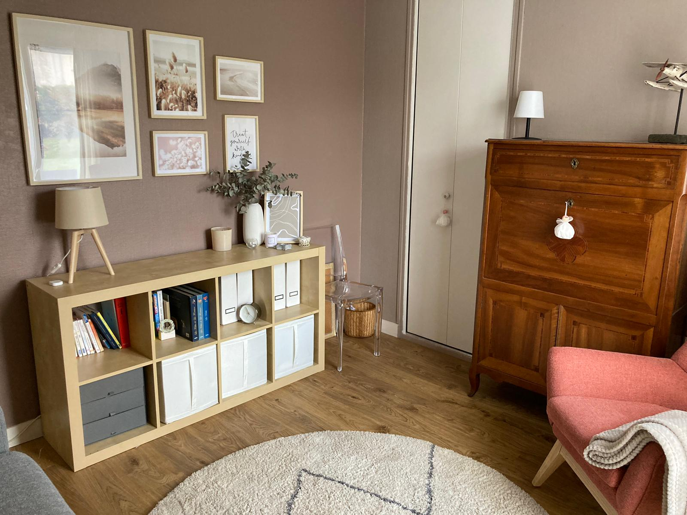

Quand avoir recours à l'hypnose ?
L'hypnose va vous permettre de mobiliser vos ressources pour vous permettre d'avancer !
- - Se recentrer sur soi, son bien-être et son énergie,
- - Atteindre un état de relaxation profonde,
- - Faciliter ou renforcer des changements, des apprentissages, la mise en route de projets,
- - Travailler sur ses pensées ou croyances limitantes, ses peurs,
- - Gagner en confiance et en positivité,
- - Mieux gérer ses émotions,
- - Gérer différemment des douleurs chroniques...
Questions fréquentes
"Est ce que je vais dormir ?"
Non ! La transe hypnotique n’est pas un état de sommeil. Mais vous pouvez vous endormir si vous vous sentez vraiment bien.
"Est ce que je vais me réveiller ? Est-ce que je peux rester
bloqué ?"
Non ! Comme vous ne dormez pas, vous n’allez pas vous « réveiller ». D’autre part, il est scientifiquement prouvé que même sans sollicitation extérieure, on retrouve un état de conscience « normal » en 10 minutes environ.
"Est ce que vous allez me « faire-faire des trucs » ? Est-ce que
je vais garder le contrôle ?"
Vous gardez le contrôle tout le long de la séance, vous pouvez interrompre à tout moment. En aucun cas on ne peut vous forcer à faire quoi que ce soit !
"Est ce que je dois fermer les yeux ? Est-ce que je peux bouger
?"
Vous pouvez fermer les yeux ou les garder ouverts selon votre envie, vous pouvez bouger (certains protocoles nécessitent même de se déplacer), vous pouvez aussi parler (je vous poserai probablement des questions pendant la séance et j’aurai besoin de vos réponses)
Le saviez-vous ?
On peut retracer les origines lointaines de la pratique de l’hypnose chez les guérisseurs chamaniques sur les peintures rupestres préhistoriques !
